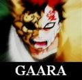
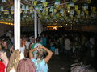
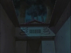
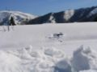
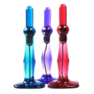
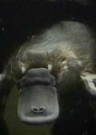
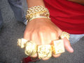
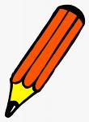
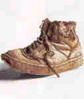
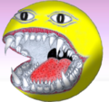

De: La Frikipedia, la enciclopedia extremadamente seria.
De: La Frikipedia, la enciclopedia extremadamente seria. De: La Frikipedia, la enciclopedia extremadamente seria.
Super Smash Bros. Brawl (o Super Aplastar Hermanos Reyerta según el Traductor de Google) es el parche 1.411 del Super Smash Bros Melee, que incluye una mejora gráfica discreta y un modo historia, además de otros contenidos adicionales (se puede ver el trailer aquí). Es un juego de peleas con aproximadamente 1500 personajes (y algunos que ni los desarrolladores conocen), esta estimación deriva de la cantidad de tiempo que se han tardado en hacerlo. Se dice que el creador Masahito Sakurei quería lanzarlo al mercado en Marzo del 2043, pero los dueños de la empresa le jalaron los huevos y ajustó la fecha para el 3 de Diciembre del 2007. Posteriormente se los soltaron un poco y lo volvió a retrasar para el 10 de Febrero del 2008. Ahora ya está asegurado con unas pinzas para el 27 de junio y ya no podrá retrasarlo más, tampoco podrá orinar o follar... jamás.
Bueno, el juego es una vil copia de comunistas) compraran este juego y hacer millonaros (¿Más?) a los chinos(o lo que sean) de Noentiendo
En este nuevo juego se ha incluido un nuevo modo de juego llamado "El Emisario del Supermercado", donde hay un personaje llamado "El ministro anciano" que quiere convertir a todos los personajes en trofeos, al principio parece el malo, pero en realidad es solo un personaje incomprendido que de chico no tuvo amigos, por eso ahora quiere llenar su cuarto de figuritas para sentirse acompañado.
Pero como aquí en Frikipedia tenemos contactos con diversas revistas especializadas (y en las revistas nadie miente), ya te podemos decir que el jefe final vuelve a ser la Master Hand, junto la Crazy Hand, y un nuevo agregado, el Insane Dick. Su plan maligno es cubrir todo el mundo de semen, esto lo logran frotando las dos manos con el imponente Insane Dick.
Un dato curioso sobre el Insane Dick es que inicialmente fue modelado del pene del veterano personaje Donkey Kong; pero se descubrió que el patético gorila Photoshopiaba sus fotos para no pasar vergüenzas. Finalmente decidieron extraer uno abandonado en el útero de la princesa Bitch.
El juego presenta dos versiones para esto
Hasta ahora conocemos 136 de los 1500 personajes del juego, seguimos investigando.
| Foto de archivo | Nombre | Descripción | Ataques |
|---|---|---|---|
| Mario | Es un maldito y estereotipado bastardo Italiano,peligroso criminal/ex-fontanero y camello de monguis (setas alucinógenas) de origen videojueguil/Nontentiendo | Lanzar bolas de fuego y cosas de esas. | |
| Link | El debate de que si se trata de un elfo o un hilyan(o como coño se escriba), es tan viejo como el debate del huevo y la gallina. También posee una sexualidad indefinida ya posee como seis aros en la oreja y a pesar de rescatar a zelda en incontables ocasiones, solo son amigos. | Meter sablazos (de dinero lógicamente) y practicar tiro con arco. | |
| Pikagay | Ratón sobrecrecido de sexo indefinido que ha sufrido el proceso de pokemonización al recibir una descarga de 10.000 voltios y una patada en los cojones, adquiriendo un color amarillo* y la facultad de almacenar electricidad estática en los coxones (no confundir con cojones ya que aunque son similares carecen de función reproductora). | ¡Pikagay! ¡Impactrueno! | |
| Kirby | Es una bola rosada fabricada por la empresa Noentiendo que se come todo lo que pilla para poder transformarse. | Ah, ¿pero ataca y todo? | |
| Fox | Es un zorro proxeneta que va en su nave conquistando a zorras interfalácticas para su causa. Esta imagen con el fuego fue tomada después de intentar traerse consigo a la zorra de fuego | Golpe rabo, ataque zorra, disparo de láser de feromonas, golpetazo de nave espacial, violación zorril... | |
| Samus | Es una rubia cachonda que se vio obligada a embutirse en un traje robótico porque era violada constantemente. Cambió de identidad y se fue a buscar misiones |
Cañón squirt, tetazo, puñetazo en los huevos, super ataque mortal... | |
| Metaknight | Es el único personaje del mundo de Kirby con dignidad. No hay mucho más que decir. | Pues no lo sé... pero creo que la espada no es de adorno. | |
| Pit | Es un tipo que se dice que es de un juego ancestral de la NES, tan ancestral que nadie lo conoce. Tiene un arco con el que lanzar flechas que ni están envenenadas ni son de fuego, puede volar y poca cosa más. | Flechas del amor y cagada gaviota | |
| Zero suit Samus | Cuando samus hace su super ataque mortal se le cae el traje y se queda |
Su ataque más mortal es empalmarte hasta que no te llegue la sangre al cerebro, aunque también tiene un látigo láser... | |
| Wario | Es un ser básicamente igual a Princesa Beach, pero esta le da largas todo el rato. | Meterse pedos atómicos. ¡Estamos condenados! | |

|
Snake | Solid Griffin McGiver Hannibal Esputuflo Martin Cabezawebo González Zorrocloco Snake (Canuteria, - infinito, + infinito) Nació de una célula del huevo izquierdo de Wombatman y Andrés Pajares, aunque este todavía no lo ha reconocido como hijo suyo (todavía... ) |
|
| Sonic | Imagínate lo que pasaría si mezclásemos a Luis Moya con un erizo y un ladrón y le echásemos pintura azul. El resultado es Sonic, un erizo que habla y anda a toda velocidad en busca de anillos para robar... | Enrrollarse en una bola y lamerse los cojones para desmoralizar al enemigo y entrar en joyerías para robar anillos. | |
| Ridley | Es un dragón al que le gusta violar a jovencitas rubias embutidas en trajes robóticos (léase Samus). Ha venido a participar en este juego porque le llegó un comunicado en el cual le decían que Samus saldría Samus ligerita de ropa, por lo cual no dudó en venir a cien por ora para verlo...
Ah, y no sabe volar, lo agarran con cables para que lo parezca. Tampoco echa fuego, son solo ardores... |
Ataque super especial viola-rubias-robóticas. | |
| Miyamoto | Shigeru Miyamoto es el nombre del vendedor de discos y películas piratas que tras años de buscar inspiración se convirtió en un ser amorfo creando ilusiones en las mentes de los jóvenes ilustres. | Crear pequeños Marios y links para que le protejan y ser friki hasta matar. Si Mario y Miyamoto juegan juntos el poder de Mario aumenta. | |
| Jesús | Jesús, comunista más conocido como Jesucristo y menos conocido como Richard M. Stallman (aunque se rumorea que esa personalidad no es cierta), nació el 25 de diciembre. Sólo se sabe el día y mes, el año aún no lo han podido descifrar los historiadores. Pocos saben que en realidad fue su segunda venida al mundo, ya que la primera fue como Jesús de Neanderthal. Se cree que nació en el año 3 antes de Cristo. | Dar hostias sagradas y arrojar panes y peces. | |
| 3 eyed mr. Bean Laden | Es una mutación genética generada en el lago de Springfield. Un día, Mr. Bean estaba paseando cuando cayó a este lago, donde curiosamente estaba escondido Bin Laden. Ambos se fusionaron entre sí y con el famoso pez de tres ojos para generar esta aberración contra la naturaleza... | Ataca usando rayos nucelares, expulsados por la boca, el culo y sus tres ojos. | |
| Mr. Bean | "El señor judías", es uno de los pocos ingleses que aún tiene gracia. Cuenta la leyenda que hace tiempo era un guardia del palacio de Buckinhang, pero un día lo pillaron tirando emanem's al aire y comiéndolos antes de caer al suelo y lo expulsaron. Esto explicaría por qué no es capaz de articular una sola palabra... | Matarte de risa junto a su osito de peluche. | |
| Niño loco alemán | Nombre con el que se ha bautizado (erróneamente) al protagonista de un vídeo que circula por la red, en el que un adolescente se toma muy en serio sus problemas con la informática. Recientemente, un equipo del Laboratorio de Investigación Antropológica de la Cátedra de Parapsicología Vegetal de la Universidad de Freiburg ha analizado el vídeo con detalle, y ha concluido que, pese al rumor general, sus rasgos y dicción lo identifican indudablemente como un habitante de las Islas Tokelau, con conocimientos poco más que rudimentarios de la lengua alemana. | Destrozar su teclado... en la cabeza del enemigo. Ah, y gritar hasta destrozar tímpanos. | |

|
La loca del cinturón | Extraña tipa rubia que se dedica a cantar no sé que de un cinturón. Posiblemente uno de los más terribles personajes del juego. | Cantar... sí, cantar y gana y todo. |
| Cillitbang guy | Es un cantante frustrado que esnifaba un extraño producto que emanaban las paredes de su casa. Lo embotelló, lo llamó Cillit Bang e hizo anuncios que corroboraban que podía quitar manchas. Cuando hicieron estudios en su casa que corroboraban que aquel extraño líquido eran residuos nucelares mezclados con baba de caracol. Para salvar su negocio, empezó a cantar "Bang Bang, con Cillit Bang" en sus anuncios. Sus ventas aumentaron, y los estudios sobre el contenido de su producto cesaron. | Te echa Cillit Bang a los ojos. Escuece. | |
| Niño subnormal del metro de valencia | Experimento genético creado por la CIA, que incluye el ADN de orangután, de George W. Bush y de Hugo Chávez, e insertado en el hermano pequeño de Oleguer (de ahí su gran parecido con el defensa farsalonisto. Fue creado para ver como seria el comportamiento de un ser, que tuviera todas estas características genéticas, dictatoriales, genocidas, comunistas, come niños, independentista catalán, manicuristas... | Burlarse de super abuelo. Si este aparece en el combate, el poder de ambos aumenta. | |
| Super abuelo | Es la defensa contra el engendro conocido como: el subnormal del metro de Valencia. Es un veterano de la CIA que supone la defensa absoluta contra este experimento fallido... | Levantarse y arremeter contra el enemigo. Si El Subnormal del Metro de Valencia aparece en el combate, el poder de ambos aumenta. | |
| P. Moore | No sabemos quien es, pero tiene un brazo muy fuerte con un tatuaje de amor a su madre, por lo que será mejor no meterse con esta honorable señora... | Dar hostias con su brazo tatuado. | |
| O RLY? | O RLY? | Atacar con sus afiladas garras de lechuza. Compañero de parranda de NO WAI!!! & YA RLY. | |
| NO WAI!!! | NO WAI!!! | Atacar con sus afiladas garras de lechuza. Compañero de parranda de YA RLY & O RLY?. | |
| YA RLY | YA RLY | Atacar con sus afiladas garras de lechuza. Compañero de parranda de NO WAI!!! & O RLY?. | |
| Aria Giovanni | Una tia con unas tetas de enormes proporciones(aunque ya os habris fijado en ello), que está más buena que el pan y sexualmente insatisfecha. | Lo que hace es acostarte en una cama y montarselo contigo hasta que te mueres de placer y luego aun estando muerto le sigue dando para rematar.... | |
| Gay | Sí, es lo que parece. | Estoooo... no sé. Pero no te agaches delante de el NUNCA (por si acaso) | |
| Japan Time | Es un reloj típico japonés, que marca la hora que hay en japón. | Confundir al enemigo con sus extraños símbolos y atacar cuando estén mareados de mirarlos... | |
| Snake | Parecido a Solid Snake solo que éste es el de los Simpsons. | Guardarse tabaco en la manga... ya sé que no es un ataque pero aparte de eso y atracarte no tiene nada mejor. | |
| Po | El comunista de los Teletubbies. | Repetir su nombre y darte un abrazo fuerte hasta matarte. | |
| George Foreman | Es el actual líder de audiencia televisivo, famoso por promocionar sus barbacoas en un anuncio emitido en las teletiendas internacionales. | Te pincha con pinchitos morunos. | |
| Yoda | Yoda Claudio ( 1 d.C.N - nuestra era ). Wombat evolucionado al haber sido rozado por una gota del semen de Chuck Norris, mejor amigo de Jesús, y capaz de hacer cosas tan flasheras como sentir a alguien a tres millones de años luz de distancia, sobrevivir alimentándose 500 por años a base de raíces pútridas y ser proclamado el duende más erótico y traslúcido (porque es un fantasma) del siglo XXI.
Hasta su caída (de cabello) fue el ser más poderoso de la patada giratoria fuera de cámara). Ahora se dedica a perder el tiempo apareciendo en forma de holograma ante Luke Skywalker, junto a Obi-Guan Que no te Vi y Anakin Skywalker, o escribiendo artículos para la Frikipedia, por eso no se lo considera muerto sino fantasma metiche. |
Saltar como un mono y dar sablazos de luz (igual que los de Link pero más mortiferos). | |
| Noentiendo 64 kid | Es un crío al que le han regalado una Nontiendo 64, y se emocionó tanto que desarrolló poderes psíquicos. Es, además, capaz de controlar a todos los personajes de Nontiendo que aparezcan en el juego, así como convertir tu Wii en una Nontiendo 64, y decirte lo maravillosa que es | Controlar personajes noentienderos, convertir tu wii en una nontiendo 64, chillar hasta romper los tímpanos enemigos, salir del juego y matarte... | |
| Steven Seagal | Steven Seagal es el hijo de puta más duro de todos los tiempos. Es tan duro que tuvieron que hacerle la circuncisión con cortachapas. Es el único en todo en el universo que ha sobrevivido a una patada circular de Chuck Norris, por lo que adquiere casi la calidad de indestructible. Su cara es tan rígida que habla por las orejas porque no puede mover los labios. Hay quien dice que está fosilizado, o que se cayó en una marmita de botox cuando era pequeño, pero sus verdaderos fans saben que bajo esa ruda e impenetrable superficie late un corazón sensible termonuclear y biomecánico. Steven fue uno de los que, al lado de Chuck, extermino a los frikianos del Imperio friki a base de patadas, brazos doblados y hostias giratorias. | Mirarte hasta la muerte. | |
| Chuck Norris | El tipo del sombrero... | Dar patadas giratorias. ¿Qué más sabe hacer? | |
| Adolf Hitler | Señor oscuro que se caracterizaba sobre todo por tener bigote (o un lunar, según recientes teorías), por la confusión por parte de su medico durante su nacimiento (lo confundieron con la placenta) y por gustarle mucho los simbolitos que parecían aspas de molino retorcidas (lo que lo hace descendiente de Don Pijote de la Mancha). | Llamar a la SS para que bombardee al enemigo. | |
| Nazi Samus | Si samus juega en equipo con Hitler, se convierte en Nazi Samus. Claro, es rubia y alta, un prototipo Ario, y por ello Hitler la coge para "su causa" | Handergerver squirten, teten ataquen, hengrengolpen hueven... | |
| XXX Samus | Follarse a sus adversarios quitandoles energía vital. | ||
| Google Muthafucka ¿Do you use it? | Es parte del equipo de gugel que promociona este producto de un modo muy efusivo. | Meterte el gúgel por el culo. | |
| Billy Gates | Del latín : EVil Gayts, es Famoso programador informático que implementa sus aplicaciones con los tobillos y un martillo. Se hizo famoso en los años 80's por sacar un sistema operativo a imagen y semejanza de la competencia (Macinstosh) pero poniendo especial cuidado en la falta de eficiencia, falta de seguridad, engaños al usuario, cuelgues del sistema... etc. La gente lo llama normalmente "pene", ya que es "asquerosamente rico". | Lanzar pantallazos azules. | |
| Bush | Ser mitológico y actual eterno mico) del hombre, el bushismo contradice otro de los puntos de la teoría de Darwin, según la cual "las especies sobreviven cuanto más fuertes son y mejor se adaptan al medio = selección natural", pues dicho Bushismo sostiene la teoría contraria: "cuanto más inútil e inadaptado se es, más alto se llega y más se sobrevive". La leyenda dice que si introduces en el ordenador el disco de windows al revés, aparece la cara de este ser. | Te dispara con superarmas. | |
| Murat el Mari | Es el corresponsal de guerra que llegó al precipicio de donde se iba a tirar PWNED... | Ataca con su micrófono | |
| PWNED | PWONED | Pwonear hasta la muerte. | |
| Harry Pothead | Harry Petas en versión inglesa, se ha colado en este juego usando su peta mágica tira hechizos... Está muy drogado, y puede ser peligroso | Matarte con su peta mágica | |
| Borat | Es Murat el Mari transformado en supersaiyan. Resulta irresistible a las chicas por alguna razón que desconocemos... | Ataque polla, lefazo final... | |
| Reggie Kick Ass | Jefazo de Nintendo USA. Se le reconoce por su cara de mala ostia. | Dar patadas en el culo hasta reventarlo, cuando se une con Miyamoto evolucionan en Mario | |
| Peter Griffin | Peter Griffin es un hombre gordo con gafas, con varios pares de pantalones verdes, capaz de recitar los estados de América en 10 decimas de segundo y gran amigo de Homer Simpson.Nació en Caniles, aunque se nacionalizó estadounidense.
Su brillante intelecto es frecuentemente malinterpretado como estupidez, probablemente por la envidia que despierta. Protagoniza la serie de animación Padre de Familia, y a la vez trabaja en una cadena de montaje de juguetes. |
Zas en toda la boca, zas en toda la boca, zas en toda la boca, zas en toda la boca, zas en toda la boca, zas en toda la boca, zas en toda la boca, zas en toda la boca, zas en toda la boca, zas en toda la boca, zas en toda la boca, zas en toda la boca, zas en toda la boca. | |
| Donkey Kong | Es un tío muy mono, uno de los primeros compañeros de juegos de Mario. Se dedicaba a beber barriles de cerveza y tirárselos a la gente a la cabeza, hasta que enfermó de cirrosis y tuvo que dejar de hacerlo. | Aplastar moscas con sus simias manos | |
| Cyberjesús | Si Jesús está de compañero de equipo de samus, se convierte automáticamente en Cyberjesús, una versión robótica del mismo pero con más poder para cristianizar... | Cruzifijo láser | |
| Homer | Acudió al casting este juego al saber que su archienemigo, Peter Griffin, participaba en él. Es el único ser humano capaz de beberse infinitas cervezas en tres minutos sin enfermar de cirrosis ni tener resaca al día siguiente. | Ataque seguro dental, Lisa necesita un aparato (con el cual marea al enemigo después de repetir una y otra vez esta frase), golpe barriga, cervezazo de la muerte... | |

|
Spidercerdo | Spider Cerdo, (del inglés Spider Pig o del japonés ヺぁゼェ アィ) es un gorrináceo, considerado un superhéroe estadounidense. Nacido en el año 1986 y se dedica, al igual que todos los demas ciudadanos americanos a comer basura y grasa, tambien conocida como hamburguesa. | Morder, arañar, gruñir y esas cosas que hacen los cerdos. |
| Bender | Es un robot doblavigas que funciona con un combustible a base de malta llamado cerveza. Tiene un brillante culo metálico del que presume repetidas veces, y lo encera con gran frecuencia... | Coge la botella de cerveza y te da golpes con ella hasta que te mueres. Si no te mueres, te obligará a que le beses su brillante culo metálico. | |
| Squall Leonarth | Prototipo de emo-bakala que se pasea por ahí con un sable pistola que no dispara. La cicatriz de la cara se la hizo en una pelea con su novio Seifer pero como no le encuentra para vengarse decide entrar al juego para darse hostias con Cloud. | Meter sablazos y disparar... ¿Qué? La verdad no siempre es graciosa. Si se enfrenta a Cloud gana poder. | |
| Cloud Strife | Ario alto, rubio, ojos azules y una espada descomunal (la que lleva en la mano mal pensados, aunque teniendo en cuenta que se liaba con Aeris y Tifa por algo sería) que se aburre y decide entrar a este juego para matar el rato y darse hostias con Squall. | Dar sablazos, para variar. Si se enfrenta contra Squall o Sephirot se cabrea y gana fuerza. | |
| Blancanieves | Puede parecer casta y virginal pero bajo el vestido oculta un arsenal (me ha caído en copla) consistente en un bazooka, 3 katanas, varias pistolas, fusiles, cañones de plasma y un esprai anti-violadores. Los conejitos son para despistar. | Si te acercas mucho te llenará de plomo. | |
| Yamcha | Patético segundón de Dragon Ball, no lucha simplemente mira al enemigo hasta que éste se rinde de miedo o aburrimiento, lo que venga primero. | Mirada mortal. En la columna de la izquierda se ve un vídeo animado de como la ejecuta. | |
| Naruto Uzumaki | Butanero alemán enamora-otakus de Konhoja que se metió en el juego buscando al cabrón de Sasuke Uchiha que a su vez busca a su hermano que también busca a Cloud por motivos desconocidos (suponemos que tiene que ver con un condón roto) y éste a su vez busca a Sephirot. | Multiplicarse a si mismo para volverse un montón de veces más pesado. | |
| La Marquesina | Amigable vieja que se dedicaba plácidamente a pasearse por Asturias hasta que el gafapasta que la acompaña la llevó al SSBB para hacer propaganda de sus camisetas. Ahora se dedica a comer para hacer chorizu con sus adversarios. | Técnica mortal del: ¿Quies un pocu chorizu? Además de poder sacarse todo tipo de objetos de entre las piernas desde gatos hasta tanques. | |
| Dios (alias MONESVOL) | ¿Hace falta explicar quién es esa masa de espagueti flotante con dos albóndigas? | Atacar con sus apéndices tallarinescos. | |
| Diox | Hermano malvado de Dios formado por espaguetis rancios y albóndigas en mal estado. Siente poco aprecio por su hermano pero luchan bien juntos. | Atacar con sus viles apéndices tallarinescos. | |
| Dr. Nick Riviera | Afamado, refutado y barato médico de Springfield. Era el médico del ring del SSBB hasta que se aburrió y se decidió a dar hostias él también. | Operar a muerte a aquellos que no respondan a su saludo. | |
| Jiraiya | Sannin pervertido que se decidió a entrar en los combates al enterarse de que Samus iría ligerita de ropa. Además dedica sus ratos libres a espiar a Blancanieves. | Invocar trozos de sapos y, si le pillas en un buen día, el sapo entero. | |
| Vaca Matrix |
Parece una vaca cualquiera: manchas negras sobre fondo blanco (o viceversa), cuernos y cientos de kilos de peso. Pero si te acercas demasiado te machaca a golpes de kung fu... y nada más (que esperabais es solo una |
Técnicas mortales de kung-fu; técnicas de kung-fu mortales (no es lo mismo); y disparar leche. | |
| Cani Bizco | Conocido dramaturgo, escritor, poeta, matemático, filósofo, físico nuclear cani, experto en técnicas como hacer sonar a Haze en su radio para marear. Es bizco, por si no se había notado. | Rayo bizco, ataque Haze... | |
| Cálico Electrónico | Tipo misterioso al que le gusta estar en edificios altos durante brutales tormentas de truenos. No, no es masoca, solamente acude ahí para admirar el paisaje e intentar imponer respeto a la gente (claro está que no lo consigue...). | Puede comprimir rayos de su fondo tormentoso y comprimirlos hasta que se conviertan en un chichidori. Si lucha contra XXX Samus, puede realizar el misterioso ataque "el conejito" al que nunca nadie ha sobrevivido... | |
| Aladdin | Es un "comerciante" de Ágraba (entiendase que en el Oriente Medio los comercios son de otra manera). Normalmente va acompañado de un mono/elefante, una alfombra voladora y un tipo azul de dos metros (lo habeis adivinado, va siempre metido de LSD) | Manda a su mono/elefante a atacar, porque es un vago y prefiere no moverse. | |
| EVA01 | Este es un emo llamado Shinji Ikari embutido en un traje robótico para cortarse las venas a grande escala. No sirve para matar monstruos ni nada, su único uso aparece en el final de evangelion, cuando se pregunta si él es el, o si tú eres tú o si quién es más tonto de los dos. | Ataque confuso yo-tú-él-todos-el yo que hay en ti. | |
| Goku | Este era un exterminador de bichos raros que viajaba por toda la galaxia en busca de ellos para matarlos. Cuando adquirió fama matando a un tal congelador, los bichos raros venían hacia él para ver si tenía cojones de exterminarlos. Solía teñirse con hagua oxigenada antes de cada batalla... | Kamehameha (prácticamente no sabe hacer nada más) | |
| Hipnosapo o Hypnotoad | Loado seas hypnosapo, rey y señor de los concursos de pastoreo de ovejas, líder de audiencia en televisión. Tus poderes psíquicos podrán dominar el mundo @_@ | Hipnotizarte para que te postres ante él. | |
| Sasuke Uchiha | Entró en el juego buscando a su hermano para |
Chichidori y Sharingan | |
| Paquito Frasco | Personaje fugado de Mortal Monkloa que tiene extrañas manías de matar rojos e inagurar pantanos. Instauró una dictadura frutal en España convirtiéndola en Espiña. Tiene un perrito llamado Fraga... | Swamp´s Inauguration: Ambos personajes son teletransportados a un pantano, el cual inaugura Franco (con convite incluido). Después de un par de canapés y de colegueo con el enemigo, le lanza un uppercut, y el enemigo cae hasta el fondo del pantano, el cual, después de haber caído el enemigo a lo más hondo, empieza a llenarse de agua. Si lucha con Fraga en su equipo, su poder aumenta. | |
| Fraga | Otro fugado de Mortal Monkloa, perrito de Frasco y especialista en decir verdades sin condón. Era el lugarteniente de Frasco en el reino de Pangea (también conocido como Galicia, hasta que llegó un torito que le arrebató el puesto... | Bukkake of Truth: Como el nombre indica, Fraga se pondrá a soltarte verdades sin condón. Tales verdades, son corrosivas; lo que quiere decir que mueres por el ácido. | |
| Conan | Peligroso psicópata que es un adolescente, pero tomó unas hormonas anti-crecimiento y ahora es un crío. Tiene como tapadera la resolución de crímenes, pero es una trampa, son sus propios asesinatos, que su intelecto hace que parezcan cometidos por otras personas. | Matarte usando sus dardos alucinógenos. | |
| Sinichi Kudo | Cuando Conan se emborracha |
Los mismos que Conan (Que mierda, ¿no?) | |
| House | Es capaz de soltar verdades sin condón como Fraga y operar como el Doctor Nick. Además, tiene un bastón con el que puede golpear las entrepiernas de los enemigos. | Bastonazo en la entrepierna, operación fraudulenta. | |
| Tarzán | Imitador "un poco más humano" de Donkey Kong, que se dedica principalmente a destrozar lianas al intentar usarlas |
Lanza un grito ultrasónico que puede destrozarte los oídos. | |
| Josemari Aznar | Extraño ser hortera amigo de Bush que se dedica a peinarse el bigote y atusarse los rizos. Es otro de los pirado de Mortal Monkloa. | Calling to Jorgito: Ánsar se saca un móvil para llamar a su amigo Jorge, acto seguido cuelga, y a los 3 segundos un Misil Balístico InterContinental barre el escenario (y medio país). | |
| Bahamut | Especie de dragón/bicho raro/invocación/idolo friki/cosa de un huevo de altura que se dedica a entrar cuando nadie le espera y destrozarlo todo. | Una cosa que los frikis de Final Fantasy llaman megafulgor... seguro que es una birria. | |
| Hugo Chávez | Perrito faldero de Castro que entro al casting huyendo de Magneto/Juanca I por desgracia no sabia que iría a buscarlo hasta SSBB para hacer que se callara a hostias. | Hablar hasta que el enemigo le mande a callar o le explote la cabeza (hasta ahora solo se ha dado un caso en el que ocurra lo primero). | |
| Drácula | Maligno señor de la noche que gusta de pasearse por castillos abandonados acompañado por jovencitas de indudables razones. Nadie sabe por qué se inscribió en el casting... suponemos que se aburría de morder cuellos. | Chupar la sangre (no, no trabaja para hacienda). | |
|  | Gaara | Emo psicótico que se pasea por ahí con un bicho hecho de arena y orina dentro. Suele matar a la gente porque eso le recuerda que está vivo... normal si fuera al revés no se lo recordaría más bien se daría cuenta de lo contrario. | Atacar con la arena del bicho que tiene dentro mientras el se queda quietecito y mira las musarañas. |
| Hombre del saco | Pues... esto... es un hombre con un saco y... yo que sé, se dedica a meter en a los niños lo que hace después ni idea aunque la interpol le busca por pederastia. | Meterte en su saco y hacerte cosas malas. | |
| Kurosaki Ichigo | Es un chaval pelirrojo que se pasea por ahí vestido de negro con una espada gigantes. Creo que eso lo dice todo. | Dar sablazos y hacer una cosa rara que llama bankai. | |
| Magneto) | Rey de Aspaña y supervillano en sus ratos libres. Se dedica a perseguir a Chávez para lograr que se calle de una |
* Negative Polarization: Magneto te polariza negativamente, de modo que, al tener exceso de electrones, empiezas a atraer varios objetos de metal circundantes, tales como cuchillas, motosierras, chapas, etc; y mueres triturado por las cosas a las que atraes.
| |
| Margaret Simpson | Vástaga maligna de Homer que se ha aliado con Stewie Griffin para sojuzgar al mundo. Pero es tan mona... | Romperte el biberón en la cabeza y apuñalarte con él hasta la muerte. Si lucha junto a Stewie Griffin gana fuerza. | |
| Pato aureolado | Gran dios patetista que lleva sobre su testa la brillante aureola que le pusieron los padres de Jesus de Nazaret para despistar a los romanos. | Usar su luz para que le adores. | |
| Mariano Rajoy | Compañero de pelea de Anzar. El bigotes usa al pobre Rajoy como escudo para que el se lleve todos los palos. Otro de los pillados de Mortal Monkloa. | Llamar a su primo zumosol para que te de una paliza. | |
| Ratoncito perez | Roedor allanador de moradas que sufre una necesidad imperante e inexplicable de robar dientes a pobres niños desgraciados. Siempre ataca de noche aprobechando la oscuridad igual que Papa Noel y los reyer magos. | Acribillarte con su ametralladora de dietes. | |

|
Ratzinger Z | Encarnación del mal en la tierra y uno de los más encarnizados enemigos del cristianismo. Prefiere ser llamado Benedicto XVI para despistar a sus enemigos. | Crear antimateria e invocar obispos para que se te lancen al pescuezo. |
| Shin Chan | Crio malcriado y pervertido que se pasea por ahí enseñando las vergüenzas. Vale, ahora en serio, el idolo de la mitad de los niños del mundo que se dedican a imitar sus buenas maneras. | Bailar el baile de la trompa y el culito hasta la muerte (la suya o del rival, lo que venga primero). | |
| Stewie Griffin | Maquiavélico novio a ratos de Maggie Simpsons, engendrado por una pelirroja y un gordo en viernes trece y destinado a ser el señor del mundo (sí, otro con lo mismo). | Usar sus armas laser para freirte. Si lucha con Maggie lo hace mejor para no hacer el ridículo delante de ella. | |
| Superbono | Carismático superheroe que lucha por la paz y seguridad de los PESOE el café por 0'80€). Es otro de la panda de Mortal Monkloa | Bono´s Pronunciation Attack: Se pondrá a pronunciar la "S" (J) al lado de tu oído tan fuerte que la cabeza te explotará. | |
| Superlopez | Mutación de superbono al recordar tiempos mejores en que los TBOs espiñoles valían para poco más que limpiarse el culo. | Pierde el Bono's Pronunciation Attack pero lo sustituye con el poder de ver a las tías desnudas de Krusher. | |
| Tiempo | Extraño hombrecillo que carga con un reloj gigante y nunca jamás se detiene excepto para los muertos. | Dejar caer su reloj gigante sobre ti o pararse para ti. | |
| José Luis Rodríguez Zapatero | Comunista aspañol conocido por ser el único hombre vivo que ha llegado a ver un café por ochenta centimos. Tal hazaña le otorga poderes sobrenaturales como por ejemplo ser capaz de aguantar más de cinco minutos seguidos a Hugo Chávez. | Negociation: ZP puede llegar a ser muuuuuuuuuuuuuuuuuuuuuuuuuuuuuuuuy paciente, por lo que se estará sentado contigo frente a frente en una mesa negociando la paz, hasta que mueres de viejo. | |

|
Bart | Tirarte minibolas de mierda con su tirachinas y golpearte con su monopatín (usándolo como un bate). | |

|
Duffman | Es el hombre promocionado que disfraza el consumo de Duff (¿o era al revés?).Se cree que podría ser una de las reencarnaciones de Jesús... | Ataque supercerveza, litronas explosivas... |
| Charles Montgomery Burns | Amable multimillonario que se dedica a hacer obras altruistas y a hacer del mundo un lugar mas horrible con hambre, pestilencia y catástrofes nucleares. | Despedirte y hacer que caigas por una trampilla. | |
| Personajo aleatorio | Es aleatorio, pulsa y verás. | Matarte de incertidumbre. |
Ya sabemos quienes son los paletos que se dan hostias para nuestro disfrute y regocijo. Ahora sabremos dónde se dan esas hostias.
| Foto de archivo | Nombre | Descripción | Stage Fatality |
|---|---|---|---|

|
Despacho oval | Es el lugar donde come, duerme, recibe invitados, planea lanzar bombas atómicas... el señor Bush. Es ovalar (Diox, menuda sorpresa) | Si un personaje ataca cerca de la mesa del despacho, se activa una bomba atómica secreta y el oponente es destruído...y si no te mueres sale la secretaria del Clinton y te la mama hasta resecarte. |
| Carrefour | En este supermercado podrás encontrar de todo. Hasta arboles que vuelan a 1 lero. ¡Ah! También puedes luchar en él mientras vas matando a los dependiente. | Si tiras el carro de la compra de una abuela lleno, no solo joderas al rival, sino que la vieja en cuestión cogerá un bastón y te quitará 800.000 puntos de vida. Después le dará un ataque y se morirá. | |
| Bar de Moe | El mejor remedio para superar las depresiones es tomar depresivos... Pues en este bar las cervezas tienen un 200% más de depresivos, y los cacahuetes, y los huevos en salmuera, y el aire, y el aliento de los que lo respiran. | Empujas a tu enemigo a detrás de la barra para que Moe lo mate por creer que le intenta robar. | |
| Namek | Es un planeta donde todos usan fairy, y así están, de verdes. Es el destino perfecto para ocultar unas bolas de dragón de tamaño de cabezas humanas... | Tirarte un pedo a propulsión para que explote el planeta, pudiéndo salverte gracias a la propulsión del pedo y dejando a su destino a tu enemigo. | |
| Torres Gemelas | Escenario con constantes bombardeos de |
Si te mandan una bola de energía al culo, puedes parecer una de esas lucecitas de aterrizaje de los aviones, llega un | |
| Chabolas | Lugar atestado de gitanos entre el que luchan los personajes a la vez que esquivan a los churumbeles. Éste escenario fue una concesión hecha por los patriarcas gitanos de las chabolas del sur de Ciudad Frikipedia. | Si algún personaje abre una puerta de las chabolas saldrán 20 canis-tanos y le darán una paliza al rival. | |
| Bujero Negro | Los contendientes luchan en el borde del bujero evitando caer en su interior y ser absorbidos y seguramente terriblemente mutilados. | Si algún personaje llega a la cima del bujero y tira de | |
| Castillo embrujado | Los personajes luchan entre la niebla y por los oscuros corredores del castillo (muchos aprovechan la poca visibilidad para meterle mano a Samus cuando no lleva su traje). | Cuando un personaje golpea repetidas veces la pared del castillo una torre se derrumba dejando al rival hecho fosfatina. | |
|  | Discoteca | En éste escenario los personajes se dan hostias al ritmo de la banda sonora del juego (aquí no le meten mano a Samus pero si intentan ligar con ella) además de meterse suficiente kalimotxo entre pecho y espalda como para tumbar a un buey. | Si lanzas al enemigo contra la cabina del discjockey se activa una canción de reggetón y al enemigo le revientan los sesos. |

|
Er castillo del olvido | En éste escenario los personajes se olvidan de todo,todo,TODO! es casi imposible no olvidarse de nada y volverse muy friki | Si eres el unico que queda llega La organización XIII y te saca el corazón despues de joderte a ostias |
| Hospital de la frikipedia | Lugar donde van los personajes heridos de SSBB a seguir dandose hostias lanzándose camillas y clavándose jeringas de sustancias cuestionables. | El personaje le da al botón de su cama para llamar a la enfermera para que sede al contrario y así aprovechar para darle de hostias. | |
|  | Porrochimaruland Resort Villa del Sonido | Confortable parque recreativo donde nuestro amigo Porrochimaru |
Si arrojas al enemigo a la habitación de Porrochimaru éste será horriblemente |
| Casa de la cara fea | Una gran habitacion con un limite de tiempo para romper las cosas y a tus oponentes (Advertencia, no deven destruir el cuadro de al medio) . | si nadie muere en 30 segundos, saldra La Cara Fea haciendo un K.O General. | |

|
Moncloa | Antro de sadomaso donde los enchufados sacados de Mortal Monkloa ven potenciado su poder. | Rompes el original de la constitución y los fantasmas de los políticos aspañoles atormentan al contrincante. |
| Mar | Gran charco de hagua podria. El hagua contiene tanta caca que los jugadores pueden correr sobre la superficie sin hundirse. | Una enorme serpiente marina hecha de caca devora a los jugadores. | |
| Tren | Vinísculo de locomoción en el que los personajos se dan hostias para tirarse los unos a los otros. | El tren se hunde en un socabón, el personaje cae a la vía de al lado y lo arrolla otro tren en dirección contraria. | |
| Daltonia | Colorido país que los de SSBB compraron para que los personajos se dieran hostias en sus calles. | Al rival le da un ataque epiléptico igual que el que da si ves esto. | |
| Jólibu | Apacible lugar donde, aparte de mafias, bandas callejeras y droga ahora también hay una pandilla de personajes raros raros raros repartiéndose hostias como panes. | Si haces mucho ruido Tarantino sale de un estudio y os mata y destripa a todos con solo decir Action!. | |
|  | Sitio nevado | Como el nombre indica se trata de un sitio donde ha nevado (que gran deducción) básicamente es lo mismo que otros escenarios... Pero con más frío. | Un oso polar (sí, sabemos que viven en el polo y no en las montañas) sale de la nieve y devora al jugador. |
| El Corte Inglés | Maligno lugar donde los personajes habrán de sufrir la insesante músiquilla mataneuronas y la navidad sin fin. | Los personajes son absorbidos por un bucle temporal y se ven obligados a vivir la navidad una y otra y otra y otra vez. | |

|
Puticlub | ¿Hay que explicar lo que se hace aquí? | Sale un chulo cabreado porque un personaje no le ha pagado el trabajito y le mata a tiros. |
| Basura | Los personajes de barrio sesamo salen de cubos de basura y se lían a navajazos con todo diox. | ||
| Ciudad del Vaticano | Extraña ciudad-estado donde se habla una lengua muerta, gobernada por un viejo de blanco y donde reina la lujuria y el libertinaje. | Una banda de obispos rabiosos atacan a los personjes con biblias e inensarios al oír hablar del matrimonio homosexual. | |
| Fortaleza invencible Zigas | Es Don Patch transformado en fortaleza (propiamente dicho) al ponerle un tío calvo un tatuaje en la frente. Es invencible e intraspasable, pero los de la noentiendo han raptado a Yakkun para obligar a Don Patch a abrir las puertas. | Prukogui, Prukogui, Prukogui, Prukogui, Prukogui… | |
| Coche | Un R5 de toda la vida, uno de los escenarios más amplios del juego. | Si se suelta el freno de mano, el coche rueda hasta un precipicio y mata a todo Diox. | |
| Castillo de Bitch | Es la “pequeña casa” de la princesa Bitch. Ha sido habilitada como prostíbulo, organizándose orgías a precio de ganga con Daisy, Toadette y la propia Bitch. | Aparece un Toad, se te mete por el culo y mueres. | |
| Prado | Un lugar de un extraño color verde, seguramente por culpa de depósitos de residuos nucleares. | Te conviertes en un muñeco de palitos y te cae una hamburguesa gigante en la cabeza. | |
| Espacio exterior | Es un sitio oscuro y con puntitos blancos, características que te permiten tener más facilidad para decir que "la noche te confunde". | Aparece Darth Vather en una nave, te dice que es tu padre, y te mueres porque es muy feo. | |
| Pantano | Lugar extremadamente limpio, ideal para hacer la colada, lavar la cara, etc. | Aparece Shrek y te mata por jugar en su piscinita de lodo. | |
| Playa | Lugar con arena que está en ese sitio “azul” al que llaman mar. Es el hábitat natural de veinticinco razas de “Tiabuenis toplesis” capaces de ponerte firme sin tener rango en el ejército. | Se te mete arena en el calzoncillo y mueres por el picor. | |
| Electronic City | Ciudad con muchos edificios en la que vive ese tipo al que todos llaman “Cálico Electrónico”. Cuenta con tiendas como “Electrónica Web” o “Electroni migué”. Es además cuna de personajes tan ilustres como el chacho migué o el lobohombre. | Si no juegas en luna llena, puede aparecer chemita ánsar y matarte con un “Estamous trabajandou en ellou” | |
| Mansión Playboy | Es el paraíso. Un lugar donde tendrás un grato cuidado por parte de unas conejitas que nada tienen que ver con este simpático animal… | Te explota la polla | |
| Tu puta casa | Tú sabrás, es tu casa. | Tu madre te deja sin consola para el resto de tu vida. | |
| WC | Ahora para no detener las peleas también los personajes pueden cagar, así no son interrumpidos. | desangramiento anal. |
Y por supuesto también hay objetos o ¿qué demonios os creíais?
| Foto de archivo | Nombre | Descripción | Modo de uso |
|---|---|---|---|
| Pergamino de invocación | Sirve (como su nombre indica, analfabetos) para invocar animaluchos raros que te ayuden a cargarte al rival (principalmente ranas, serpientes y babosas). | Te cortas a lo emo, restriegas la sangre en el pergamino o por el suelo y a invocar se ha dicho. | |
| Mierda pinchada en un palo | Excremento (posiblemente humano o de Yoda) atravesado por un trozo de madera alargado que los luchadores usan para golpear sin compasión a sus rivales. | Se coge por la parte que no huele mal y se golpea con la que apesta al enemigo en la cabeza o donde sea. | |
| Disco pirata de Reguetón | Arma de destrucción masiva por vía acústica que destroza los oídos de los desdichados que lo oyen. | Ponerlo a toda caña cerca del oído del rival. | |
| Tocho Infumable | Ladrillo con paginas que se usa para abrirle la cabeza al rival y, en caso de que el usuario tenga mucha mucha mucha resistencia, leerlo en voz alta. | Usarlo para atacar al intelecto del contrario (entiéndase lanzárselo a la cabeza). | |

|
Abrelatas | Perfecto artilugio para sacar a Samus de su traje. | Pues se abre una raja en el traje robótico de Samus y se la viola agusto (si no te da un latigazo claro). |
| Abrebotellas | Chisme que se usa para abrir botellas y emborrachar al enemigo hasta que no pueda tenerse en pie. | Se coloca sobre la chapa y se hace palanca (hay que ser subnormal para no saber hacer eso). | |
| Sacacorchos | Útil aparato para sacarle el corazón al contrario de forma brutal y no recomendada a menores. | Se clava en el pecho, se gira y se tira hacia afuera. Rico, rico y bueno, bueno. | |
| Iguana | Las iguanas son utilizados como los Pokémons de las versiones anteriores del juego. | Te morderan el cuello, y te sacarán el cerebro por ahí. | |
|  | Consolador | Es una típica consola de la marca dor, pensada especialmente para los personajes femeninos... y para Mario | Mmmm ¿como un palo que vibra? |

|
Palo | Es como una mierda pinchada en un palo, pero sin mierda, es decir, una mierda de objeto, hablando |
Lo tiras lejos y seguro algún enemigo será tan tonto como para ir a cogerlo… |
| Bola concentrada de coloconio | Si te la tomas, te aceleras y efectúas un ataque especial con el subidón que te entra. El de Mario es echarte gasolina y prenderte fuego, el de Samus es desnudarse para que no te llegue la sangre a la cabeza… etc… Pero tiene efectos secundarios, cuando acabas te llega el bajón y casi te mueres, a no ser que seas el doctor House… | Lo comes y te aceleras, así de fácil. | |
| Peine de plástico | Objeto útil donde los haya, sirve para… para…. Peinar al enemigo hasta que se le claven las púas en el cerebro… | Se coge con la | |
| Junai | Es un cuchillo para esquilar ovejas que utilizan en Naruto, aunque en este juego tiene un uso diferente: amenazar a tus oponentes para conseguir coloconio para tu gran ataque especial. | Se coge y se trincha, así de fácil. | |
|  | Ornitorrinco | Es un feroz ornitorrinco al que le han inoculado sangre de wombat. ¿Qué por que no han metido un wombat directamente en el juego? Por miedo… | Se lanza y empieza a matar |
| Pato | Es un objeto de invocación, si lo usas aparecerá Ralph Wiggun dando vueltas alrededor de tus enemigos diciendo “Pato pato pato pato pato…” y matándolos con su duende pirómano a la vez que avanza. | Se alza el pato y entonces… Pato pato pato pato pato pato pato pato pato pato pato pato pato pato pato pato pato pato pato pato pato pato pato pato pato pato pato pato pato pato pato pato pato pato pato pato pato pato pato pato pato pato pato pato pato pato pato pato… | |
| Yogur caducado | Yogur marca Hacendado con sabor a ano al que se ha dejado |
Se le abre la boca a la victima, se le mete dentro (el yogur mal pensados) y se le hace tragar... se esperan diez minutos y el pobre morirá de indigestión. | |
|
|
No tocar, peligro de muerte | Sin comentarios... | |
| Barra Inanimada de Cabrono | Sacrosanta barra fabricada en cabrono que participó en una misión espacial y fue empleado/a del mes en la central nucelar de Springfield. | Tú no usas a la barra, la barra te usa a ti. | |

|
Botas de a pelitos | Botas que se ponen las jessis para no pasar frío en los pies, comúnmente conocidas como botas de la media legua mal andada. | Aparte de poner cachondos a los canis bastante pocos... |
| Bastón | Terrible arma de tecnología puntera, ideal para destruir grandes masas de enmigos. | Se coge por un lado y el otro se hunde en la chima del enemigo. Si lo usa House tiene más eficacia debido a la experiencia. | |
| Marioneta | Horrible autómata que esconde en su interior terribles armas envenadas, explosivos, cañones de plasma y... ¿Para qué engañarnos? Es solo un |
La sujetas del palo y se la enseñas al enemigo hasta que se muera de risa. | |
| Dados | Malignos instrumentos creados por los roleros para llevar la destrucción al mundo. | Arriesgándote a tirarlos... pero como saques un pifia puedes cagarte en las bragas (lleves o no). | |
| Móvil | ¡ |
Se coge, se sopesa (como Cocodrilo Dandee con la lata de verduras) y se lanza con presición... Con un poco de suerte se acercará al contrario. | |
| Artefacto motorizado para atropellar a los contrarios con saña y mala uva. | Echas al tipo de blanco que hay dentro y pasas varias veces por encima de la víctima. | ||
|  | Sellos | Sirven para moldear el chakra y hacer cosas raras como escupir fuego o barro, manejar marionetas o hacer que los ojos se te pongan rojos (en realidad esto se consigue con mucha droja). Aunque también puedes dejárselos grabados al rival en la cara directamente. | Los haces con los dedos o te los pones. Depende de como te salga |
| Cuchillas emo | Perfectas para rajar emos hasta la muerte (en caso de personajes emo si usan este objeto se volverán contra ellos mismos al no poder resistirse al suicidio). | Se coloca sobre las venas y se mueve de un lado a otro. | |
| Microscopio | Artefacto usado por los astrónomos para defender sus adorados observatorios. | Se coge por donde se pueda y se lanza sin piedad contra el enemigo. | |

|
Cabra de la Legión | Invocación bestial que se lanza sobre el enemigo violándolo hasta la muerte para después devorarlo (muy adorable el bicho). | Se invoca y se la deja trabajar. |
| Ladrillos | Arma mortífera que se usa para abrirle la cabeza al personal (para variar). | Vas cogiendo y lanzando hasta que se acaben... simple. | |
| Goma de borrar | Una goma milán de las de toda la vida. | Teniendo en cuenta que la mayoría de los personajos son dibujos no hace falta romperse mucho la cabeza. | |

|
Saxo | Instrumento musical que puede ser usado para amansar a tus adversarios... hundiéndoselo en la cabeza. | Se coge por la parte fina y por la otra se dan hostias "anestésicas". |
|  | Lapiz | Magnífico instrumento para crear |
Se dibuja con él... lastima que en el juego no haya papel. |
| Seta alucinógena | Alimento de Mario, de color rosita y blanca, con ojos y tal. Le hace crecer a Mario, pero también aumenta su grado de alucinación, pudiendo matarse a sí mismo. | Hmmmm ¿comiéndola? ¡No!, sería demasiado tonto, es mejor hacer que tu cuerpo “la absorba” de una forma extraña… | |
| Pegamento | Uno de los instrumentos más sencillos de usar y potentes, se le da a oler al oponente y esperas… | Obligas a tu oponente a que esnife los gases tóxicos que emana. | |
| Gafas | Sirven para hacer fuego y quemar a tu adversario. Si se las quitas a un oponente, puedes pegarle más fuerte. | Coges las gafas y las restriegas con una piedra. | |
| Lápiz táctil | Es como un lápiz, pero que no escribe, sino que pinta en la pantalla táctil, pero como la wii no tiene pantalla táctil, puedes usarlo para metérselo por el culo al rival. | Se coge y se introduce. | |

|
(¬_¬) | Poderosa invocación emoticonal, que consiste en una profunda mirada que deja tiesos a tus enemigos, para violarlos a placer. | Se pone en los ojos y se sirve bien fresquito |
| Impresora | No es una impresora corriente, en su tinta se entretejen los colores y la maldad. Podrás imprimir fotocopias de ti mismo y joder al personal. | ¡Lee el puto manual! | |
| Baba de caracol | Objeto de curación, lo usas y se te curan todas las heridas de golpe. Aunque puede tener efectos secundarios, y estirarte la piel lo suficiente como para que te olvides de intentar a volver a andar… | El usuario se desnuda y se extiende la crema por todo el cuerpo (todos esperaremos a que Samus coja este objeto… dgaaaaaaaaaa, disculpad, tengo que ir al baño…) | |
| Pai Pai | Es un abanico chino, que puede servir para muchas cosas, como para avivar un fuego (echándolo ala hoguera). | Se agita para dar gustirrinín si hace calor, a gusto del consumidor. | |
| Tao Pai Pai | Es lo mismo de antes, con la simple diferencia de que tiene un Tao antes y de que no sirve para dar aire. En lo demás es idéntico. | Le dices a quien tiene que matar y se monta en una columna para impresionar (y eso es de lo más normal del mundo…) | |
|  | Zapatilla | ¿Qué es esa cosa que tienes en los pies? ¡¡¡DIOX!!! ¡Es una zapatilla! Este objeto tiene el poder de destruir el mundo | Nadie sabe usarla… |
| Porro | Los efectos de su consumo pueden hacerte que hagas una especie de Suiken (técnica del combate borracho) pero mucho más potente. Además, verás colorines y demás mariconadas. | No estoy muy seguro, pero tú por si acaso, prueba a fumártelo. | |
| Botella | Se dice que antes contenía whisky, zumo de pera, o tungsteno. Pero ahora está vacía, así que no intentes beber… | Se la rompes en la cabeza a tu enemigo. | |
| Piedra | Cosa gris, dura, y gris, y dura. Se dice que en una vida anterior fue una rana convertida en príncipe, convertido en Pikachu, convertido en piedra. | No sé, supongo que se la tienes que meter por el culo al enemigo. | |
| Farruquito | Importante invocación, que tan solo ser invocado comienza a matar a tus enemigos con su coche. | ¿No está claro? Lo azuzas para que atropelle y punto. | |
| Mando de la Wii | Instrumento mediante el cual podrás controlar a tus enemigos. Es un objeto muy poderoso y útil. Nota importante: aunque tiene forma de consolador, se considerado y no te lo metas por el culo… | Lo coges con la mano y empiezas a controlar a tus enemigos para que se suiciden como emos. | |
| Navaja | Hembra del navajo. | Se coge por la parte que no está afilada y | |
| 2+2= | Operación matemática imposible que destroza los sesos del rival que acaban esparcidos por todo el escenario. | Se la enseñas al enemigo y esperas a que explote. | |
| Cámara fotográfica | Aparato perfecto para sacar fotos a los enemigos, enseñárselas y hacer que se mueran de vergüenza por lo feos que son. | Apunta y dispara | |
| Flaite | muy hábil con armas filosas y de fuego, si se sabe usar puede ser una de las armas más peligrosas del juego. | pagale gamba y le corta la cara al enemigo, también roba habilidades como Kirby | |
| Rascaculos | Un objeto para que no tengas que hacer el esfuerzo de tener que rascarte el culo con la mano y sentir el placer de que el culo no te pique sin tener que ensuciarte la mano. | Bajas los pantalones al enemigo y le rascas el culo hasta que se muere de placer. |
| Foto | Nombre | Ubicacion | Ataques | Puntos Vitales |
|---|---|---|---|---|
| Mounstro de las galletas | Nivel 1: Luego de que el ministro antiguo deja una polla en el estadio, sale este y te ataca por detras. (Deves Pelear como Pó y Yamcha) | El monstruo esta detras del esenario, te puede aplastar con sus manos de poliester con lana, comerte y atacar con su galleta como freeseby. (Si le destrulles su galleta los ataques seran el triple de fuerte.) | 50 | |
|  | Pac-Man Con esteroides | Nivel 2: Cuando Cyberjesús ve la explosion de lefa desde un video de yu-tub, se injerta por el USB y se mete con su gato a "MundoGarrota.Com", en eso estaba explorando hasta que la pagina se pone en blanco y dice que no se encuentra, luego sale el comecocos con esteroides. | Te persigue por donde vallas egullendo todo lo que toca | Infinito al cubo, para destruirle tienes que llebarlo a la papelera de resiclaje. |
| Edgar | Nivel 13: Bush Inicia su crusada para matar a Sadamm hussein y al pasar la frontera de mexico y la tierra de Huevocartoon encuentra a el rio de la muerte donde ya hay una polla caliente y Edgar esperandolo. | Te Empuja Por el tronco y te pega con el palo | Para vencerle hay que esperar que se tropiece con un hueco y badabin badaban! Lo has desbloqueado como jugador! | |
| Saddam Hussein | Nivel 15: Bush al continuar su viaje por africa, alfin encuentra a su objetvo, Sadamm hussein. | El Cobarde Se esconde detras del esenario y manda a sus tropas a matarte, se revela cada ves que mates 20 tipos. | 150 (tropas 30) |
En el vídeo suena la música de "La Macarena" versión lenta, cantos gregorianos y letra cambiada. He aquí la nueva letra de la canción que acompaña el trailer.

|
Plun Haha |

|
| Canción del trailer de Super Smash Bros |
NOTA: tal vez crees que estemos fumados más que de costumbre si lees esta letra de canción y no has visto
el trailer. Si no lo has visto ¡MIRALO POR DIOX!
En cambio, la versión oficial traducida al castellano dice:
|
|
Ali Babá |
|
Autor(es):